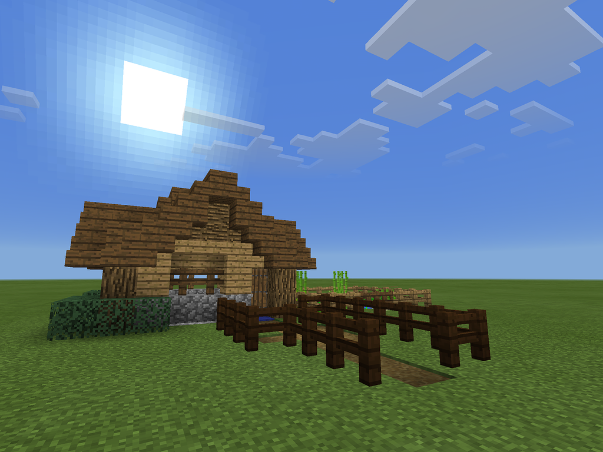

During COVID, playing the sandbox game
Minecraft was my favorite pastime.
Not only is it an infinite world of great possibilities; The developers allow you to modify the game with "
Texture Packs".
Texture packs are files that allow you to control how the game looks. If you think grass is obnoxiously green, just use a texture pack! If you want all your cows to look like dragons, there's a texture pack for that.
Curiosity...
Only out of curiosity, I made
my own one day. I made a pack that made the nether (Minecraft hell) look like a winter wonderland.
Surprisingly, when I shared it in a texture pack
Discord community (Choosing Nera as my name - who knows why), many people were encouraging! They suggested I publish it on a Minecraft fan website, PlanetMinecraft (along with some constructive criticism).
My original pack was met with moderate success. However, I was less interested in making whimsical packs. I wanted to fix the original look of Minecraft to be internally consistent. The lingo for this is a "Vanilla-fix".
Success!
Next, I made packs that made all the tools look the same as their component materials. For example, a wooden sword would now be the same exact color as wooden planks and sticks.
This is where I met real success. Others found great interest in this, and it became my niche. I updated everything from bows to bones, and buckets to bricks.
Learning?
But in my pack creation, I realized there was a large barrier to entry. Everyone should be able to change their game, however they'd like.
I used my newly found expertize to code websites which let you make your own pack. You can swap colors, combine packs, even change the default wallpaper, just at the click of a button.
Nowadays, my website (
nera-w.com) has about 2,000 users per month. Through my passion, I learned invaluable programming skills at home.
That's all.
Get in touch!
 Witte's Workbench
Witte's Workbench